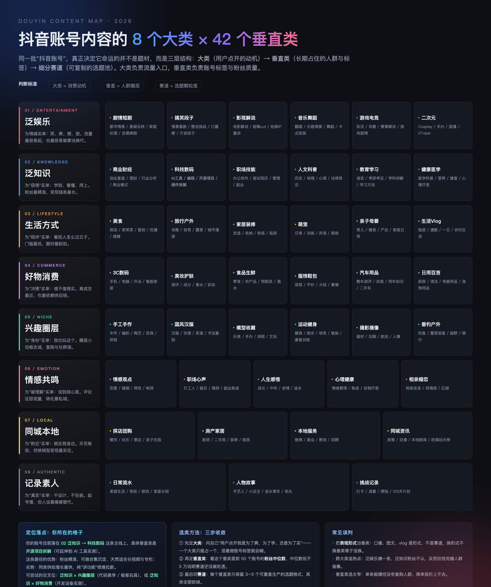
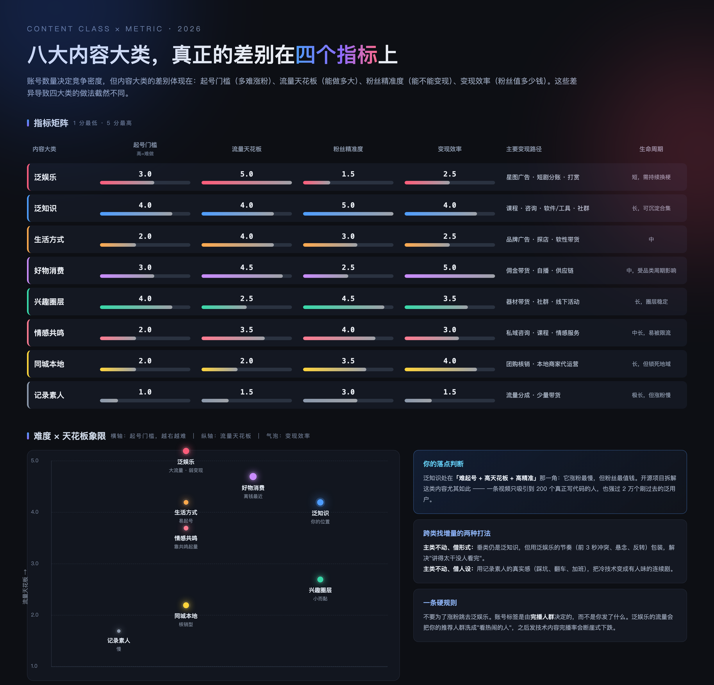

← 返回首页
抖音账号内容的 8 个大类与 42 个垂直类
2026-11-28 · AI 内容 / 账号运营 · 2 张图 · 8 大类 / 42 垂直类
给自己或者一批同行的抖音账号做内容盘点，最容易犯的错误是按「题材」分类：美食、数码、剧情、萌宠。这样分出来的结果没有用，因为它解释不了一件事——同样是美食，为什么有人能接品牌广告，有人只能挂小黄车；同样是讲技术，为什么有人涨粉慢却报价高。
真正有用的分类是三层：大类（用户为什么点开）、垂直类（账号占住了哪一群人）、赛道（还能拍多少条不重复的选题）。大类决定流量入口，垂直类决定账号标签和粉丝质量，赛道决定内容能不能持续。
一、分类地图：8 个大类，42 个垂直类

八个大类及其下垂直类、细分赛道
八个大类分别是：泛娱乐、泛知识、生活方式、好物消费、兴趣圈层、情感共鸣、同城本地、记录素人。判断标准不是题材，而是用户点开时想要什么：
| 大类 | 用户想要 | 典型垂直类 |
|---|
| 泛娱乐 | 笑、爽、燃、甜 | 剧情短剧、搞笑段子、影视解说、音乐舞蹈、游戏、二次元 |
| 泛知识 | 学到、看懂、用上 | 商业财经、科技数码、职场技能、人文科普、教育学习、健康医学 |
| 生活方式 | 看别人怎么过日子 | 美食、旅行户外、家居装修、萌宠、亲子母婴、生活 Vlog |
| 好物消费 | 值不值得买 | 3C 数码、美妆护肤、食品生鲜、服饰鞋包、汽车用品、日用百货 |
| 兴趣圈层 | 我也玩这个 | 手工手作、国风汉服、模型收藏、运动健身、摄影摄像、垂钓户外 |
| 情感共鸣 | 说到我心里 | 情感观点、职场心声、人生感悟、心理健康、相亲婚恋 |
| 同城本地 | 就在我身边 | 探店团购、房产家居、本地服务、同城资讯 |
| 记录素人 | 真实、不设计 | 日常流水、人物故事、挑战记录 |
这套一级/二级的划分方式，和平台自己的内容标签体系是同一套思路（巨量星图按美妆、时尚、萌宠、生活、音乐等一级类，再往下切二级标签）。区别在于我把它按「用户动机」重排了一遍，因为做账号时真正要回答的是「用户为什么点开我」，不是「我拍的是什么」。
二、四个指标，把大类分出了高下
账号数量决定竞争密度，但大类之间的差别在四个指标上：起号门槛（多难涨粉）、流量天花板（能做多大）、粉丝精准度（能不能变现）、变现效率（一个粉丝值多少钱）。

左：四项指标打分；右：门槛与天花板的象限分布
几个可以当结论用的观察：
- 泛娱乐是「高天花板 + 低精准」。流量能到顶，但粉丝是来看热闹的，变现靠星图广告和短剧分账，单价被流量逻辑压着走。
- 泛知识是唯一四项都在 4 分以上的大类。起号最难（4.0），但粉丝精准度满分，课程、咨询、工具、社群四条变现路径都成立，生命周期长、能沉淀合集。
- 好物消费变现效率满分、粉丝黏性最弱。离成交最近，但观众关注的是货不是你，账号本身的可迁移性差，受品类周期影响大。
- 同城本地被地域锁死。天花板只有 2.0，但团购核销和本地商家代运营是现金流最实在的一块。
- 记录素人起号门槛最低（1.0）、天花板也最低（1.5）。人设最难被替代，但涨粉极慢，适合当辅助手段，不适合当主线。
三、选类：三步收敛，别一次跨两层
给一个新号定方向，或者给一堆账号做盘点，我按这三步来：
- 先定大类，只定一个。问一句「用户点开我是为了爽、为了学、还是为了买」。混着做，账号标签就会糊，这是最常见也最难救的问题。
- 再定垂直类，看密度。挑垂类里前 50 个账号，看粉丝中位数。中位数低于 5 万说明这条赛道还没被吃透；如果头部几十万、腰部全是几千，说明已经被少数账号封死了。
- 最后切赛道，砍到 3–5 个。每个垂直类只保留能重复生产的选题格式，其余全部砍掉。赛道是用来保证「第 50 条和第 1 条一样能拍」，不是用来展示丰富度的。
四、三个常见的分类误判
把表现形式当垂类。口播、图文、Vlog、剧情短片都是表现形式，不是赛道。换形式不换垂类，等于没换；反过来，同一个垂类换三种形式，往往比换垂类更容易起量。
跨大类追热点。账号标签是由完播人群决定的，不是由你发了什么决定的。泛娱乐的流量会把推荐池洗成「看热闹的人」，之后发正经内容，完播率会断崖式下跌。这条比选错垂类更致命，因为它会污染历史标签。
垂类切得太窄。单条能爆，但没有可复购的人群，商单报价上不去。窄不等于精，判断标准是「这个垂类里有没有人愿意为下一期付费或买单」。
五、我自己落在哪一格
按这张图，我的抖音账号在02 泛知识 → 科技数码 → 开源项目拆解（可以延伸到 AI 工具实测）。这个位置的特点是：难起号、高天花板、高精准。一条视频只吸引 200 个真正写代码的人，也强过 2 万个刷过去的泛用户——因为这个人群会看合集、会追更、会为工具付费。
想提速，增量的来源不是换垂类，而是借形式：
- 借泛娱乐的节奏：前 3 秒给冲突或悬念，中段给反转，把技术内容从「讲清楚」改成「看到最后才知道」。
- 借记录素人的人设：踩坑、翻车、加班、被面试官问住，把冷技术变成有连续性的日常。
- 借好物消费的落点：开发设备、键鼠、显示器实测，是这条垂类里最顺的变现延伸，不伤标签。
一个可执行的检查：把最近 20 条视频按这张图打上「大类/垂类/赛道」三个标签。如果大类出现两种以上，或者赛道超过 6 个，账号定位基本可以判定是散的——这时候先收缩，再谈涨粉。
下一步
这张图现在是静态的，还有两件事值得做：
- 把一批同行账号（哪怕 10 个）逐个打标签，做成定位散点图，直接看出哪些格子已经过密、哪些还空着。
- 给自己的历史视频做一次归类统计，算出各赛道的内容占比与实际播放中位数，用数据而不是感觉决定砍哪条线。
分类的意义不在于把内容分得多整齐，而在于让你在选题会上能一句话说清「这条为什么不拍」。